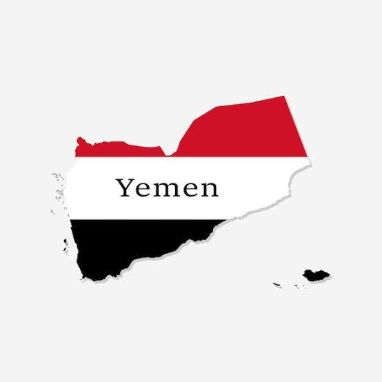

Welcome to Yemen: secondary 2.A

Discover the rich history, diverse landscapes, and current challenges of Yemen.
Geography and Topography
Yemen is located in the southern part of the Arabian peninsula bordered to the north by Saudi Arabia to the east by oman and to the west by the red sea Yemen is one of the neighboring countries that does not have rivers running through it
Yemen also have famous island called Socotra known for its diverse biological environment
In Yemen there is also a mountain called jabal AL-Nabi shuayb which is the highest mountain in Yemen
IN Yemen you can find the alovera plant and the white corn And the least populated place in Yemen is saihout governorate In which the population there is less than 60'000 people while hadra mout is known as the biggest government there It is full of people where the number of people there is 1'028'556 by tayyam.
History and Culture
Yemen has a rich culture shaped by its
Arab, Islamic, and local traditions, with
colorful festivals, poetry, and music. Its
architecture is unique, featuring tall mud-
brick buildings with intricate designs. The
old city of Sana'a, a UNESCO World Heritage
Site, is famous for its multi-story houses
with stained-glass windows and ornate
patterns. Shibam, known as the "Manhattan
of the Desert,' has impressive mud-brick
skyscrapers. These structures show
Yemen's creativity and its ability to blend
tradition with the environment by Mohammed.
Economy
In late 2005, the World Bank (which extended Yemen a four-year US$2.3 billion economic support package in October 2002, together with other bilateral and multilateral lenders) announced that, as a consequence of Yemen's failure to implement significant reforms, the World Bank would reduce financial aid by one-third over the period July 2005 through July 2008. A key component of the $2.3 billion package — $300 million in concessional financing — has been withheld, pending the renewal of Yemen's PRGF with the IMF, which is currently under negotiation. However, in May 2006 the World Bank adopted an assistance strategy for Yemen, under which it will provide approximately $400 million in International Development Association (IDA) credits over the period FY 2006 to FY 2009. In November 2006, at a meeting of Yemen's development partners, a total of $4.7 billion in grants and concessional loans was pledged for the period 2007–10. At present, despite possessing significant oil and gas resources and a considerable amount of agriculturally productive land, Yemen remains one of the poorest of the world's low-income countries; more than 80 percent (2018) of the population lives in poverty.[21] The influx of an average 1,000 Somali refugees per month into Yemen looking for work is an added drain on the economy, which already must cope with a 20 to 40 percent rate of unemployment. Yemen remains under significant pressure to implement economic reforms, lest it face the loss of badly needed international financial support.

Contemporary Issues
Yemen has been experiencing conflict and a humanitarian crisis, with efforts for peace and rebuilding ongoing.

Yemeni Cuisine
Yemeni cuisine is rich and diverse, known for its use of spices, fresh ingredients, and unique flavors. Popular dishes include Mandi, Fahsa, and Saltah, often enjoyed with traditional flatbreads like Malawah.